This website will help you to set up and explore your Raspberry Pis, understand what they are, and what you can do with it!
Pair up with the person next to you, and ask questions or offer help whenever you can. If you finish first, help your peers catch up.
Don't forget to label your pi and accessories! Everyone’s Pi and power supply looks the same. Labeling will help me get it back to you if you forget something.
What is a Raspberry Pi?
Its a fully featured, internet connected Linux computer that is easy to embed into prototypes (in other words, a low cost, credit card sized computer)
It's also a platform for interactive devices and the Internet of Things (GPIO pins and HAT extensions make it easy to add sensors, physical controls, outputs and interfaces to your projects).
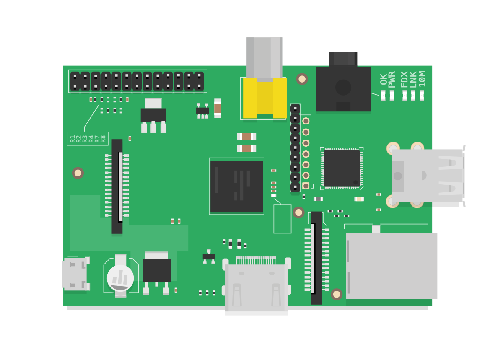
Fun Pi-powered projects
The following are some examples of projects powered by Pi
Black Mirror
Interactive AR mirror with facial recognition that provides live news and weather data (https://magicmirror.builders/)
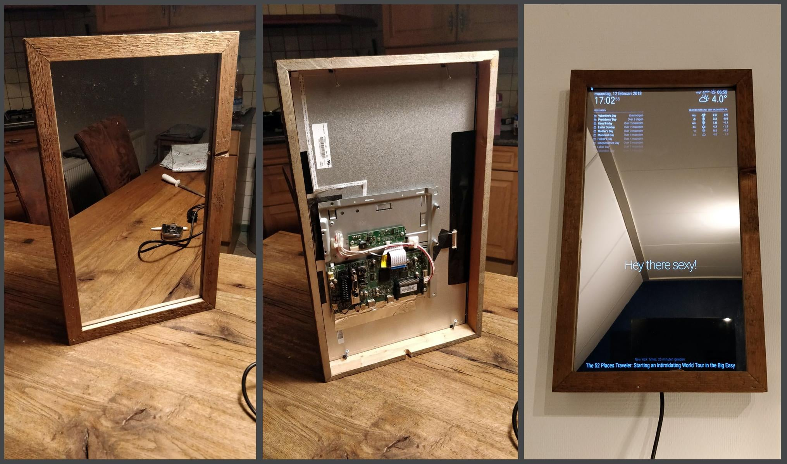
Wildlife Camera w/ Object Recognition
Cheap but effective way to capture some excellent close-ups of foxes, birds, mice, squirrels and badgers using object detection, and tweet the results (https://www.raspberrypi.org/magpi/wildlife-camera-object-recognition/).
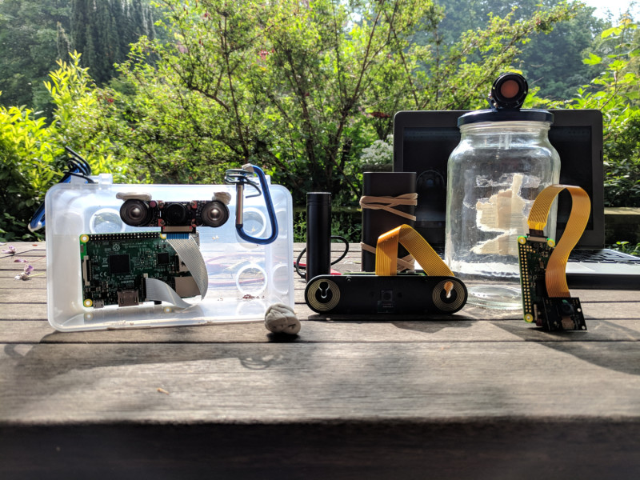
Raspberry Pi vs. Arduino, what gives?
Rpi - Microprocessor
Good for processing data
Linux OS
HDMI/ Audio output/ USB / Wifi/ Bluetooth
Only digital GPIO pins
High power consumption - 750mW+
Arduino - Microcontroller

Good at controlling inputs/outputs
Only runs the code you put on it. No OS or firmware
Digital and Analog GPIO pins
Low power consumption - 175mW
Choose Arduino for:
Controlling lots of sensors, small LCDs and motors, low power applications (ie. battery powered projects) and analog sensors.
Choose Raspberry Pi for:
Handling video or graphic interfaces, projects that process lots of data ( ie. data visualization ) and computer vision and other performance-dependant processes.
Arduino vs Raspberry Pi reference:https://www.youtube.com/watch?v=7vhvnaWUZjE
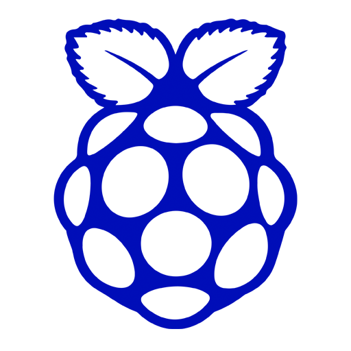
Lets Get Started
What you will need:
(Hardware)
A monitor with a cable (and, if needed, an HDMI adaptor)
A USB keyboard and mouse
A power supply
Raspberry Pi, and SD card
(Software)
Raspbian, installed via NOOBS
Attach UBS/Power Last
Just like with Arduino, we want to make sure that our circuits are complete before powering. With Raspberry Pi, this also ensures all peripherals initialize properly while it boots up. Make sure your Pi is off while making changes to attached circuits.

STEP #1
Install the Micro SD card in the back.

STEP #2
Plug in the HDMI.
STEP #3
Plug in a USB Mouse.
STEP #4
Plug in a USB Keyboard.
STEP #5
Plug in the Power adapter to Micro USB.

What you will need:
(Hardware)
A monitor with a cable (and, if needed, an HDMI adaptor)
A USB keyboard and mouse
A power supply
Raspberry Pi, and SD card
(Software)
Raspbian, installed via NOOBS
Attach UBS/Power Last
Just like with Arduino, we want to make sure that our circuits are complete before powering. With Raspberry Pi, this also ensures all peripherals initialize properly while it boots up. Make sure your Pi is off while making changes to attached circuits.
STEP #1
Install the Micro SD card in the back.
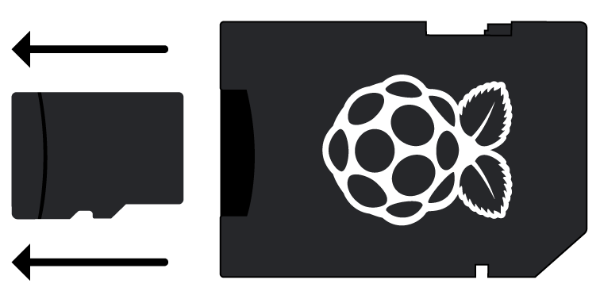
STEP #2
Plug in the HDMI.
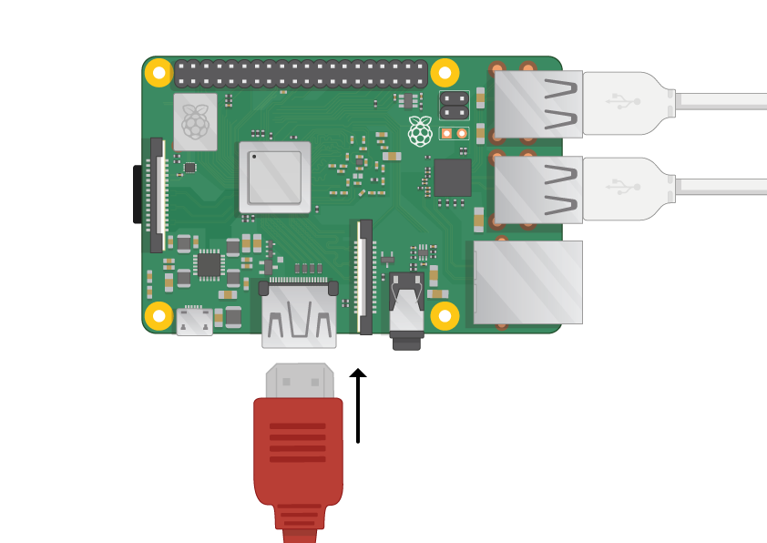
STEP #3
Plug in a USB Mouse.
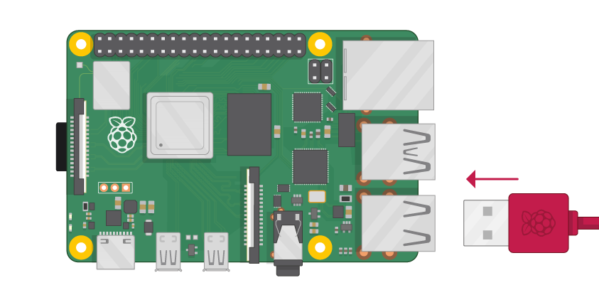
STEP #4
Plug in a USB Keyboard.
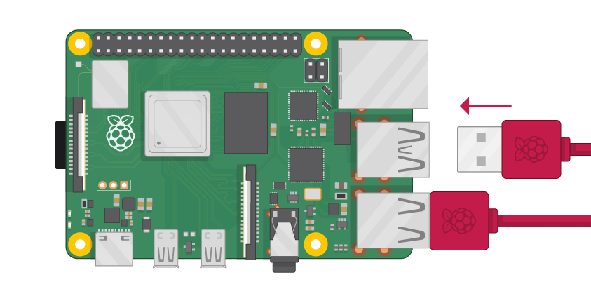
STEP #5
Plug in the Power adapter to Micro USB.
Raspbian Install
This screen (NOOBS) allows us to choose an operating system to install. These cards come preinstalled, but a fresh setup would require moving some files onto the SD card. Choose Raspbian and click Install.
One Last Setup Set
The setup wizard will walk you though setting location (for time), keyboard type (usually US layout), and changing the system password. These can all be changed later, through the “Raspberry Pi Configuration” menu item.
Explore your Pi!
Finished installing? Awesome! Let’s take a closer look inside
Network name: ECUAD_IXDLab
Password: Design_The_Future
Lets browse the web!
design.ecuad.ca/rpi
The Pi can be used as a full-featured web browser. This page is a collection of reference links for the raspberry pi workshops, and also these slides.
What can this thing do?
Find a game on your RPi, and try it out! What other applications are already installed?
Workshop 2
Review exploration: What did you find or do on your pi that was different from what we did with Arduino?
VNC Remote Desktop
To start enable VNC and change hostname.
To do so, go to preferences > Raspberry Pi configuration. Change it to something unique like [ Yourname-pi ]. This allows us to find the pi without knowing its IP
Access your Pi remotely
TVNC tutorial design.ecuad.ca/rpi ( Linux -> Set up VNC ).
Connecting at home, you may need a wired connection first to set up wifi over VNC( NOTE: a full class trying to use VNC streaming at once might be very slow ).
VNC makes your Pi more flexible
Using your laptop’s screen, keyboard and mouse to drive the pi makes setup much more portable. You may still need a monitor/keyboard/mouse for some troubleshooting situations.
SenseHat
An add-on board including a grid of leds, and lots of sensors including:
Gyroscope
Accelerometer
Magnetometer
Temperature
Barometric pressure
Humidity
Joystick/physical input
Sense HAT emulator
trinket.io/sense-hat
Useful if you need to develop for your sense hat directly from your laptop.
Rpi Camera
High resolution (8MP) video and still camera. Great for motion tracking and computer vision projects.
I can’t wait to program!
Programming isn’t magic made with math. It’s just giving a computer instructions in a way it can understand. You can already think like a computer.
Morning Routine
Get out of bed
Go to the washroom
Have a shower
Make breakfast
Eat breakfast
etc.
What is an IDE?
An integrated development environment (IDE) is a software application is used to write, build and debug code. Essentially a text editor with code specific features.
Arduino IDE
Processing
This screen (NOOBS) allows us to choose an operating system to install. These cards come preinstalled, but a fresh setup would require moving some files onto the SD card. Choose Raspbian and click Install.
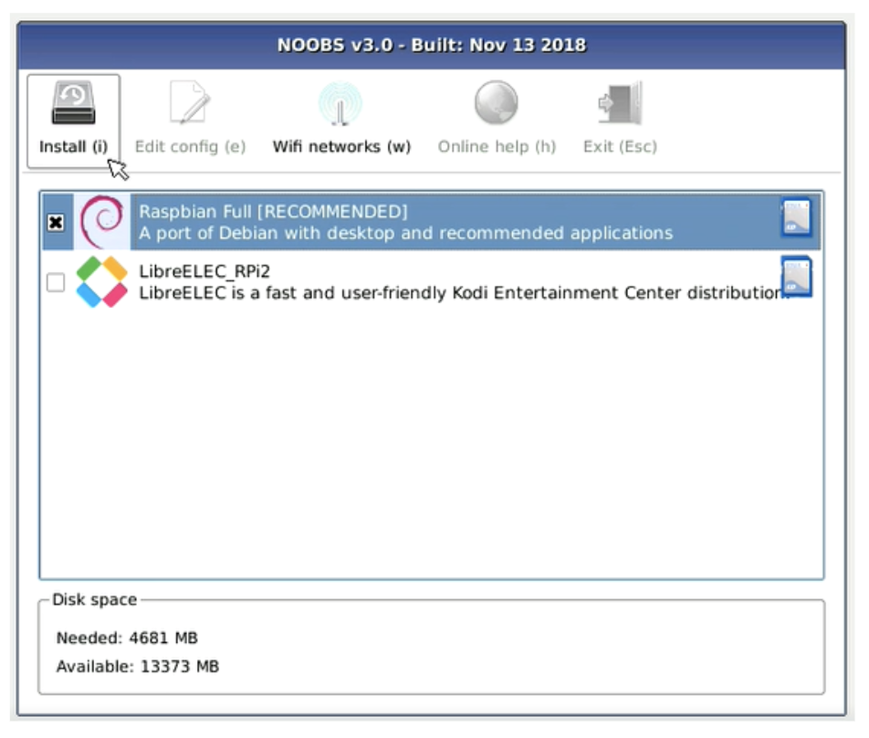
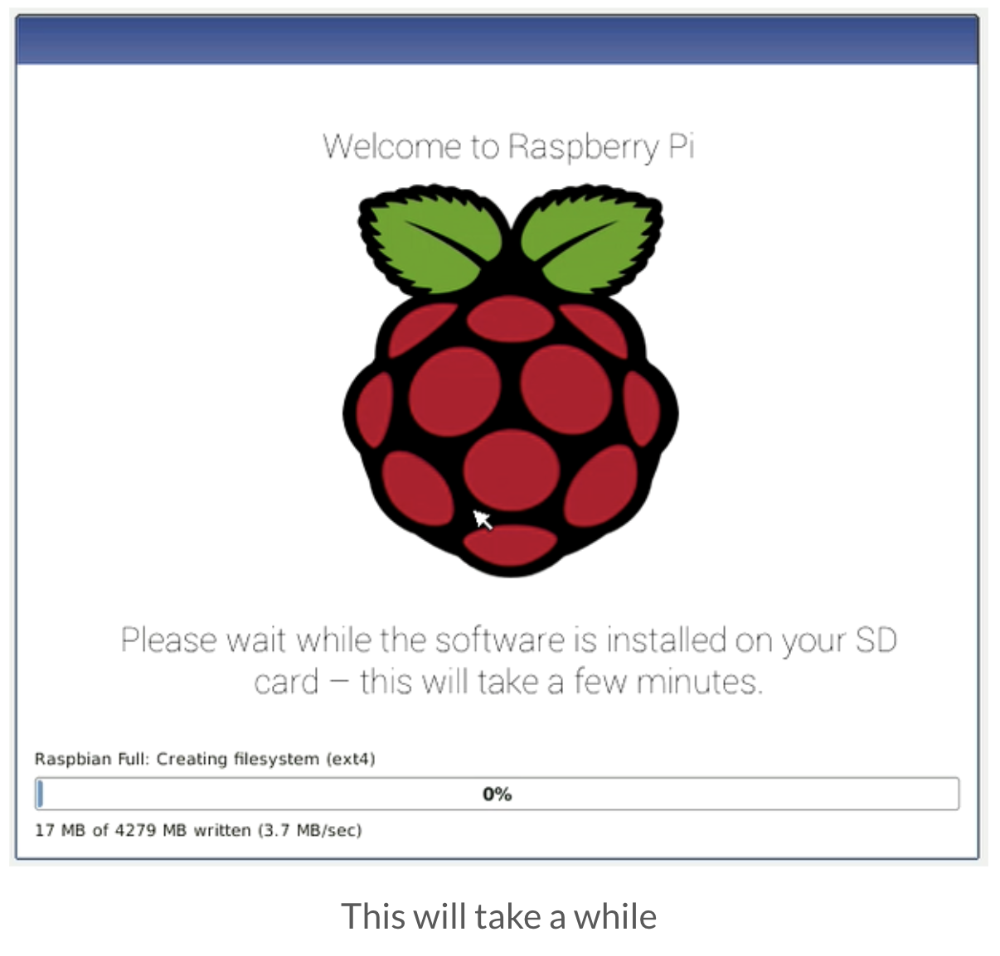
One Last Setup Set
The setup wizard will walk you though setting location (for time), keyboard type (usually US layout), and changing the system password. These can all be changed later, through the “Raspberry Pi Configuration” menu item.
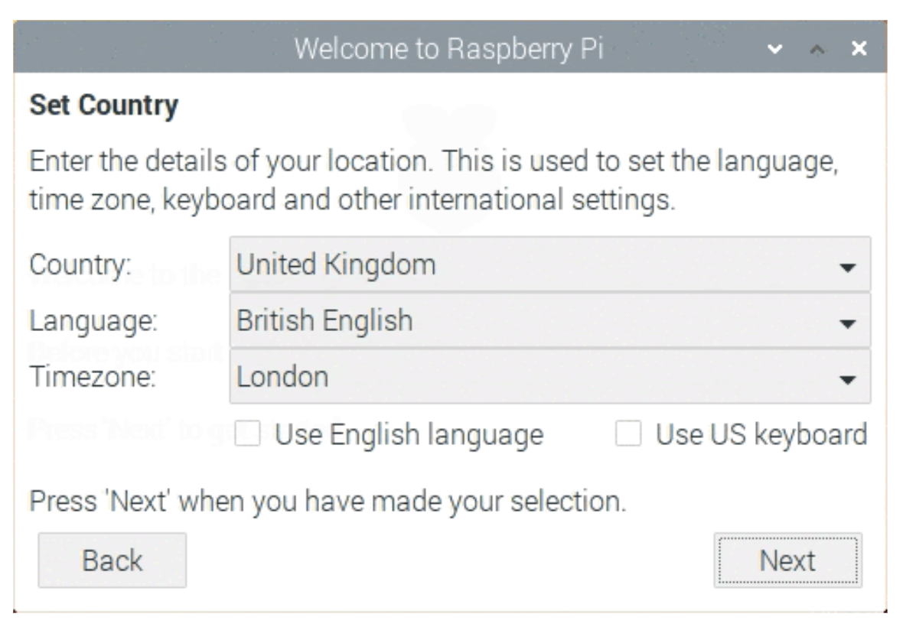
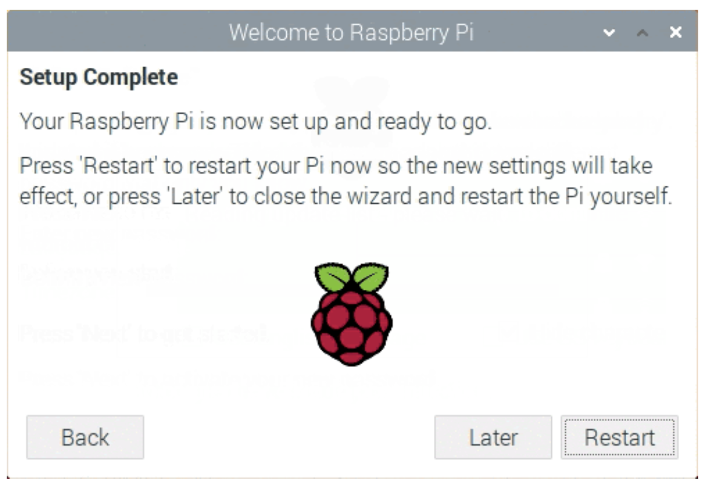
Explore your Pi!
Finished installing? Awesome! Let’s take a closer look inside
Network name: ECUAD_IXDLab
Password: Design_The_Future
Lets browse the web!
design.ecuad.ca/rpi
The Pi can be used as a full-featured web browser. This page is a collection of reference links for the raspberry pi workshops, and also these slides.
What can this thing do?
Find a game on your RPi, and try it out! What other applications are already installed?
Workshop 2
Review exploration: What did you find or do on your pi that was different from what we did with Arduino?
VNC Remote Desktop
To start enable VNC and change hostname.
To do so, go to preferences > Raspberry Pi configuration. Change it to something unique like [ Yourname-pi ]. This allows us to find the pi without knowing its IP
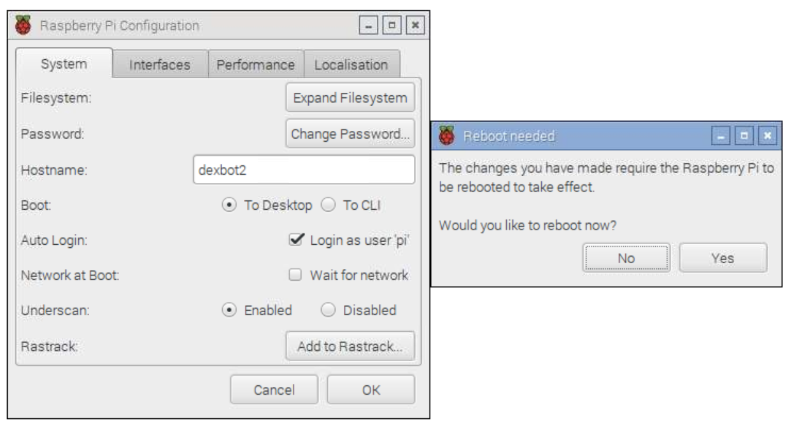
Access your Pi remotely
TVNC tutorial design.ecuad.ca/rpi ( Linux -> Set up VNC ).
Connecting at home, you may need a wired connection first to set up wifi over VNC( NOTE: a full class trying to use VNC streaming at once might be very slow ).
VNC makes your Pi more flexible
Using your laptop’s screen, keyboard and mouse to drive the pi makes setup much more portable. You may still need a monitor/keyboard/mouse for some troubleshooting situations.
Python
Let’s get some code running on our Pis
You’re already familiar with the Arduino IDE
The Arduino programming language is based on C, and used the Arduino IDE as the environment to program and run code.
Thonny is similar for Python
We’ll be using the Python programming language in the Thonny IDE. It’s very light on syntax ( easy for humans to read and write ), and interfaces well with RPi peripherals like SenseHAT.
Python vs. Processing/Arduino
Python
Interpreted, generally runs slower
Typically less lines of code, and more human readable
Indentation is part of the code, incorrect spacing will cause errors
Dynamically typed variables, decided at run time
Not tied to a specific IDE ( VS Code is a good one )
No built in looping
Processing/Arduino
Compiled, generally runs faster
More syntax
Indentation is purely visual, but a good practice
Statically typed variables (ie. int)
Bundled with an IDE
Have a built in looping function ( loop() or draw() )
Indentation
In Python, indentation is part of the code, replacing brackets. This means it will cause errors if incorrect. Can use either spaces or tabs, but it’s best to pick one.
Dynamic typing
Variables don’t need to be set to a specific type of data, and can change at runtime.
Hello, Python!
Your first line of code in Python: Hello World!
Open a Thonny editor and type:
print(“hello world!”)
Your first line of python code!
Let’s get some code running on our Pis
You’re already familiar with the Arduino IDE
The Arduino programming language is based on C, and used the Arduino IDE as the environment to program and run code.
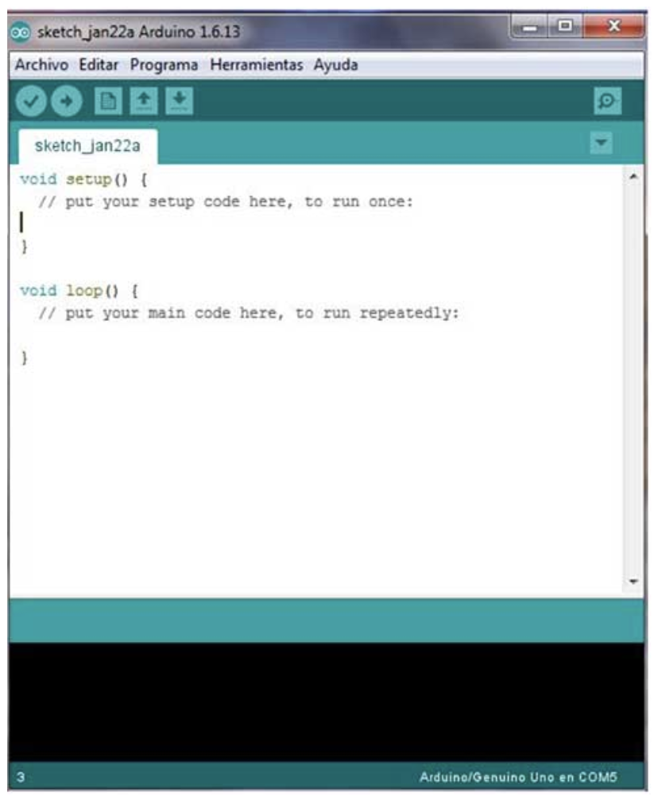
Thonny is similar for Python
We’ll be using the Python programming language in the Thonny IDE. It’s very light on syntax ( easy for humans to read and write ), and interfaces well with RPi peripherals like SenseHAT.
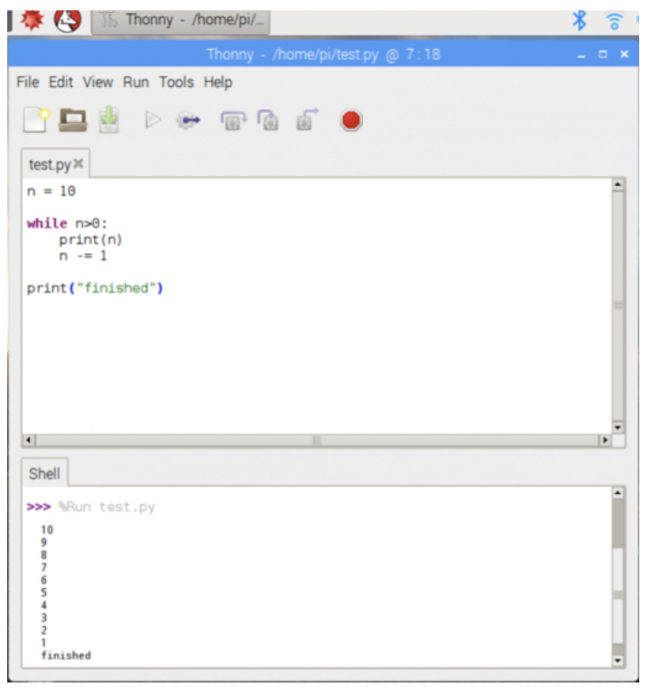
Python vs. Processing/Arduino
Python
Interpreted, generally runs slower
Typically less lines of code, and more human readable
Indentation is part of the code, incorrect spacing will cause errors
Dynamically typed variables, decided at run time
Not tied to a specific IDE ( VS Code is a good one )
No built in looping
Processing/Arduino
Compiled, generally runs faster
More syntax
Indentation is purely visual, but a good practice
Statically typed variables (ie. int)
Bundled with an IDE
Have a built in looping function ( loop() or draw() )
Indentation
In Python, indentation is part of the code, replacing brackets. This means it will cause errors if incorrect. Can use either spaces or tabs, but it’s best to pick one.
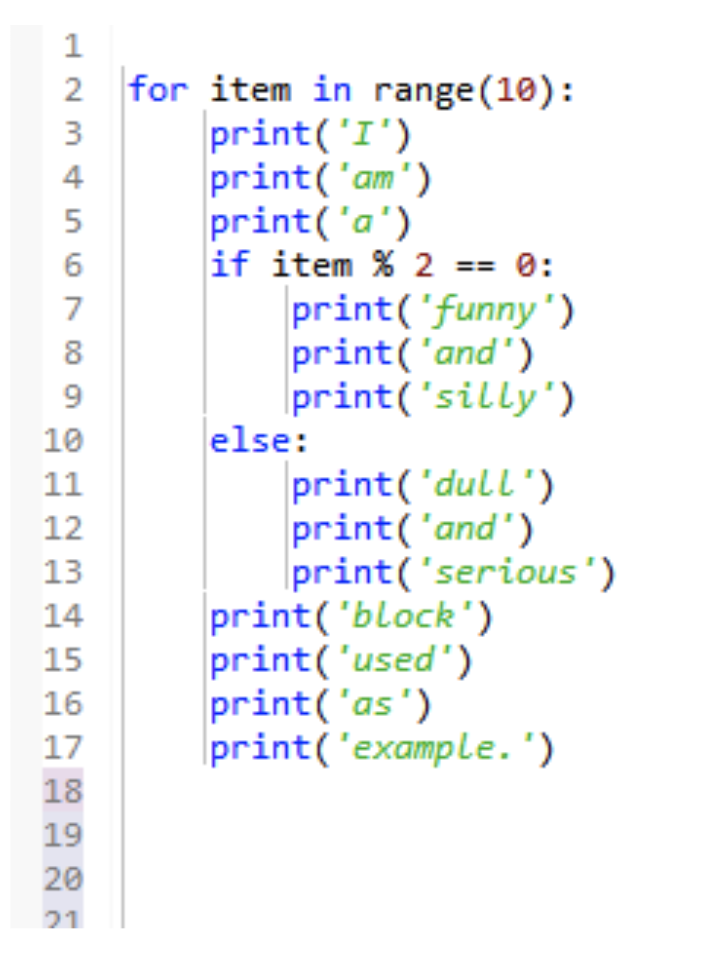
Dynamic typing
Variables don’t need to be set to a specific type of data, and can change at runtime.
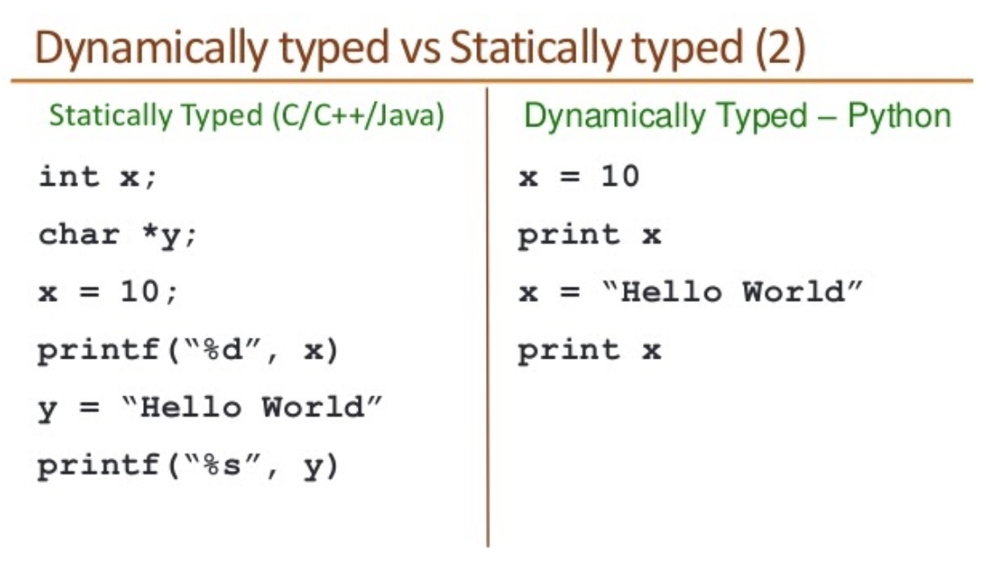
Hello, Python!
Your first line of code in Python: Hello World!
Open a Thonny editor and type:
print(“hello world!”)
Your first line of python code!
SenseHat
An add-on board including a grid of leds, and lots of sensors including:
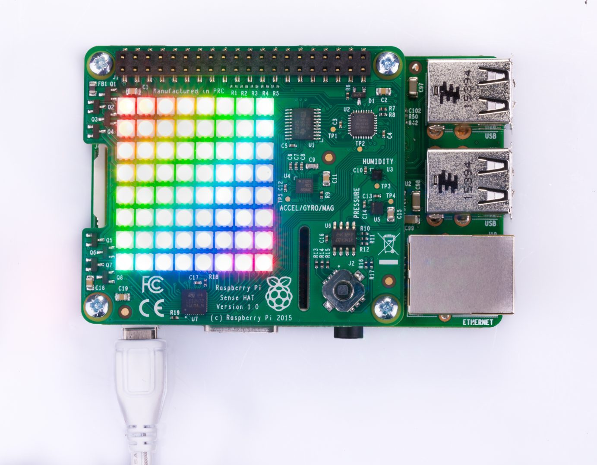
Gyroscope
Accelerometer
Magnetometer
Temperature
Barometric pressure
Humidity
Joystick/physical input
Sense HAT emulator
trinket.io/sense-hat
Useful if you need to develop for your sense hat directly from your laptop.
Rpi Camera
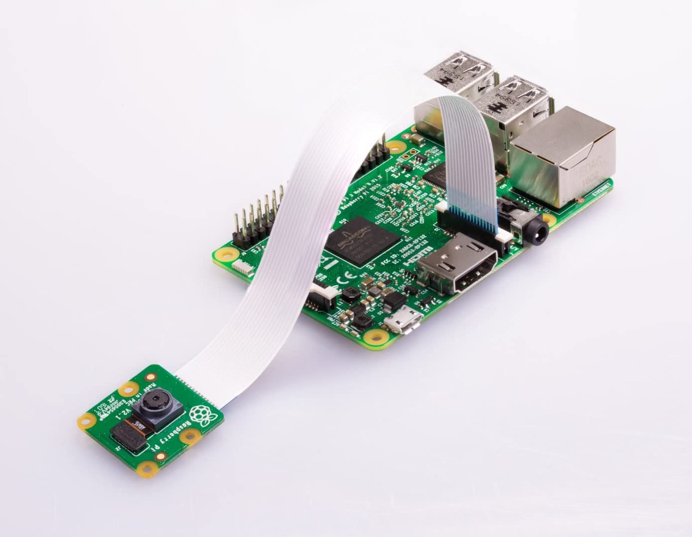
High resolution (8MP) video and still camera. Great for motion tracking and computer vision projects.
I can’t wait to program!
Programming isn’t magic made with math. It’s just giving a computer instructions in a way it can understand. You can already think like a computer.
Morning Routine
Get out of bed
Go to the washroom
Have a shower
Make breakfast
Eat breakfast
etc.
What is an IDE?
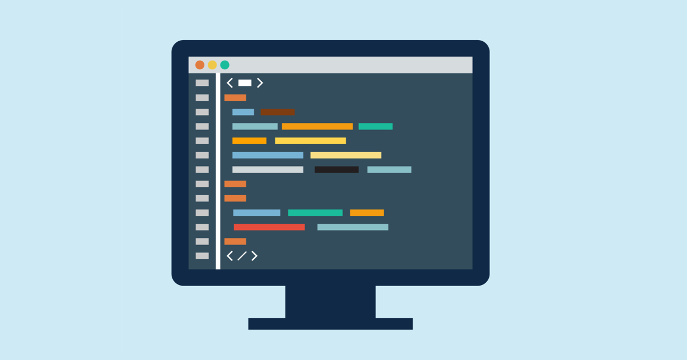
An integrated development environment (IDE) is a software application is used to write, build and debug code. Essentially a text editor with code specific features.
Arduino IDE
Processing